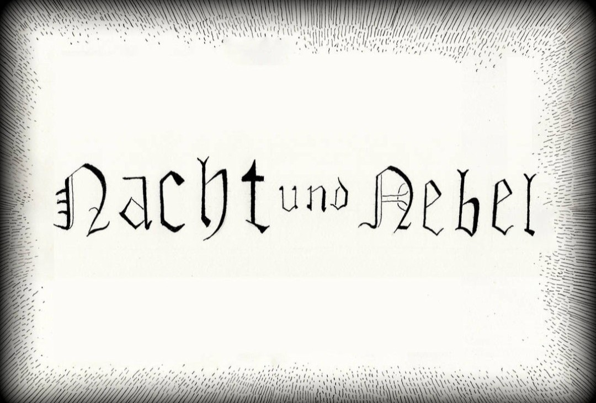

NACHT UND NEBEL
Le décret de disparition (1941)
Le décret « Nacht und Nebel » (NN), signé le 7 décembre 1941 par Adolf Hitler,
institue la disparition totale des résistants arrêtés dans les territoires occupés.
Son objectif : plonger les prisonniers dans le « brouillard et la nuit »,
sans laisser de trace, sans procès public, sans information aux familles.

Origine du décret
Le décret NN est conçu pour terroriser les populations occupées.
Les résistants arrêtés doivent disparaître dans le système concentrationnaire allemand,
sans communication, sans jugement, et sans localisation connue.
Qui étaient les déportés NN ?
Les déportés NN étaient principalement des résistants français, belges, néerlandais,
luxembourgeois et norvégiens.
Ils étaient transférés vers des prisons du Reich, puis vers des camps de concentration,
souvent dans des conditions extrêmes.
L’univers concentrationnaire en France

Cette photographie montre un camp situé en France durant l’occupation.
Baraques alignées, barbelés, miradors : un environnement de répression
similaire à celui dans lequel furent envoyés de nombreux déportés NN.
Elle illustre le contexte concentrationnaire dans lequel le décret
« Nacht und Nebel » plongeait les résistants arrêtés.
Objectifs du décret NN
- faire disparaître les résistants sans laisser de trace
- empêcher toute communication avec les familles
- briser les réseaux de résistance
- instaurer la terreur dans les territoires occupés
Destin tragique
Les déportés NN étaient soumis à des conditions extrêmes :
isolement, travail forcé, privations, brutalités, transferts incessants.
Beaucoup ne revinrent jamais.